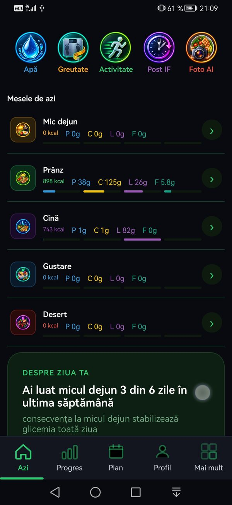

NutriRO recunoaște automat alimentele dintr-o poză și calculează caloriile și macronutrienții pe loc. Este în programul de testare Google Play, înainte să ajungă public — și căutăm cât mai mulți testeri care să-l încerce și să ne spună sincer ce nu funcționează.
Necesită Android 8.0 sau mai nou.
Odată instalată, păstreaz-o minimum 15 zile — e o cerință a programului de testare Google Play.

Toate funcțiile — inclusiv cele Premium — deblocate cât ești în grupul de testare, fără niciun cost.
Vorbești direct cu dezvoltatorul, nu cu un formular anonim. Ce raportezi tu se rezolvă efectiv, vizibil.
Când NutriRO ajunge public pe Play Store, tu ai deja luni de experiență cu el — și un cuvânt de spus în cum a ieșit.
Un click, cu propriul cont Google — devii membru instant, fără aprobare din partea noastră.
Al doilea link te recunoaște automat ca membru al grupului și îți activează accesul de tester Google Play.
Instalezi NutriRO normal, ca orice altă aplicație — fără APK, fără fișiere externe. Păstreaz-o instalată minimum 15 zile — e o cerință a programului de testare Google Play.
Foto AI, jurnal, rapoarte — folosești aplicația normal și ne spui ce a mers, ce nu, direct din aplicație.
Necesită Android 8.0 sau mai nou.
Odată instalată, păstreaz-o minimum 15 zile — e o cerință a programului de testare Google Play.